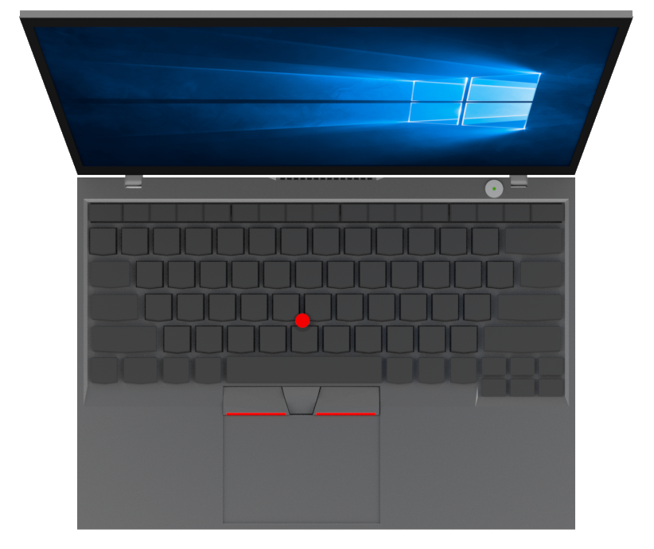
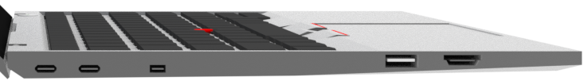
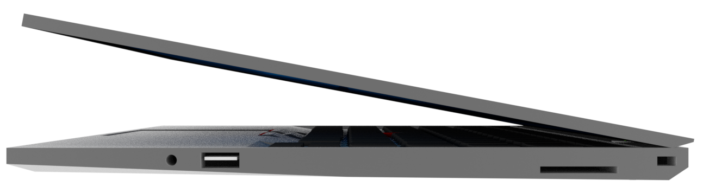
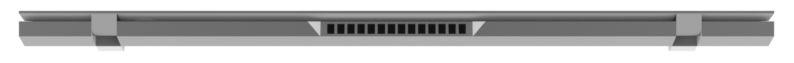

特徴
A4サイズに、フルピッチキーボード、13.3型ディスプレイ
質量わずか約 1.13 kg、厚さ 約15.95mmの新しい X2 Carbon は、軽量、薄型のビジネス向けノートPCです。 A4サイズと同じ大きさの筐体に、フルサイズのキーボードとビジネスに十分なインターフェースを搭載。 ディスプレイは筐体の端まで最大限広げた13.3型WQXGA。 X2 Carbonは、どこから見ても、非の打ち所がない完成されたモデルと言えます。
あらゆる環境で利用可能
本体は 4 層から成るカーボンファイバーで強化されており、加えて、マグネシウム合金のロールケージも実装されているため、さらに強度が増しており、あらゆる環境に対応できる設計となっています。 また、X2 Carbonはきわめて悪い過酷な環境で、10数項目にわたるMIL-SPECテストに合格。 優れた耐久力で、オフィスでも外出先でも、ビジネスを強力にサポートします。
Thunderbolt 3 に対応し、わずか 1 時間で 80% の充電が可能
X2 Carbon のバッテリー駆動時間は最大約15時間です。 バッテリーが消耗しても、急速充電の機能を使えば、わずか 1 時間で電源容量の 80% の充電が可能です。 昼休みの休憩時間や、移動時の乗り継ぎ時間などに充電をするだけで、さらに長時間バッテリーを使用できるようになります。 また、給電しながら40 Gbpsのデータ転送にも対応。 Thunderbolt ドックを使えば、2台の 4K ディスプレイに出力することもできます。
熱を感じさせないラップトップ
ラップトップとは、膝の上において作業できるコンピュータという意味です。 本機では、温度が高くなりやすいCPUとファンを本体中央部に配置することで、膝においても熱を感じません。 また、伝統の180°開くディスプレイにより、床においても作業できます。 どんな場所でも最大限の生産性を実現します。
もう、パスワードは要りません
Windows Hello の機能をサポートしているので、もう、パスワードを覚えておく必要はありません。 指紋スキャナーにタッチするか、先進の顔認識テクノロジーを備えた新機能の赤外線カメラを利用すれば、PC にログインできます。 既にお使いのソフトウェアやハードウェアで動作するように設計面にも配慮しています。 Windows 10 Pro は高度なセキュリティ機能など、生産性向上に貢献する機能を備えており、デバイス管理、Windows Update for Business などにも対応します。
クラシックなカラーとモダンなカラーのモデルをご用意
新しい X2 Carbon では、伝統の洗練されたブラックのカラーに加え、モダンなシルバーのモデルをご用意しています。 お好みに合わせて 2 つのカラーからお選びください。
製品仕様
各部名称
正面
- カメラ
- 指紋センサー
左側面
- USB Type-C/Thunderbolt 3
- イーサネット拡張コネクター
- USB3.0
- HDMI
右側面
- マイクロフォン/ヘッドフォン・コンボ・ジャック
- USB3.0
- SDメディアカードリーダー
- セキュリティーキーホール
背面
- microSDメディアカードリーダー/SIMカードリーダー
WEB向けモデル仕様表
| 2018年2月8日 | X2 Carbon |